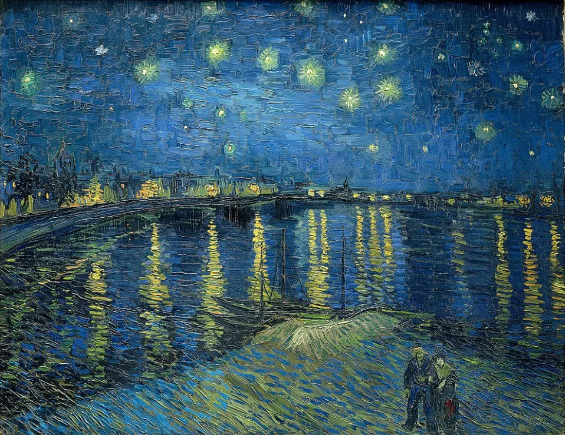
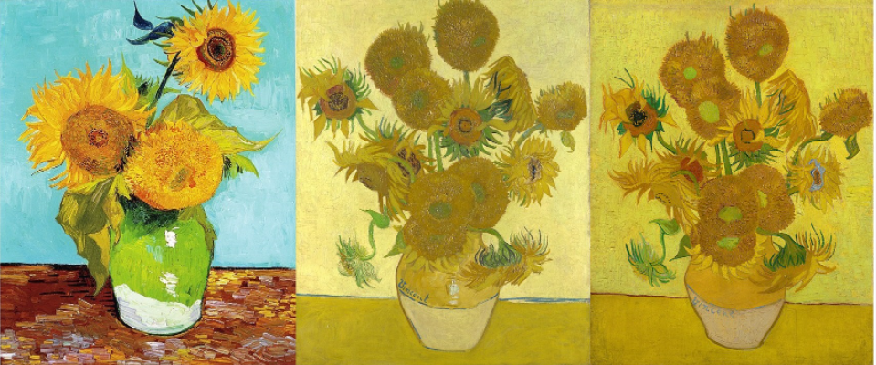
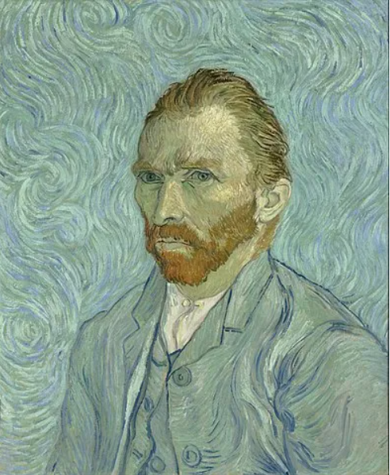
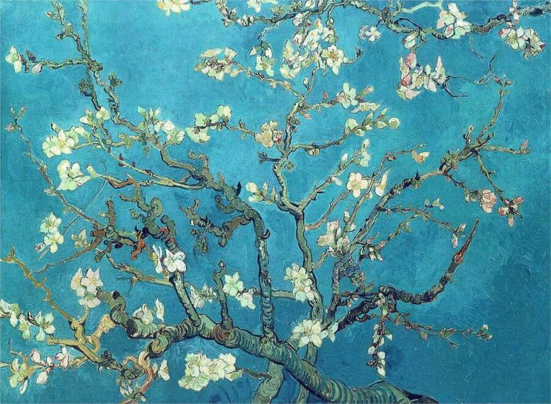

Звездная ночь (1889)

Чем знаменита эта картина?
Звездная ночь, вероятно, будет первым в чьем-либо списке, когда дело доходит до наименования самых известных произведений Ван Гога. Вы найдете это на плакатах, носках новинки, сумках, компьютерных фонах, татуировках на руках - что угодно. Вы также найдете его на стенах Музея современного искусства в Нью-Йорке, где он является одним из самых привлекательных в музее (что действительно говорит о многом, учитывая количество другие удивительные картины, присутствующие в коллекции MoMA).
Звездная ночь это не просто одна из самых популярных картин Ван Гога; это одно из самых знаковых произведений искусства из существующих. Его впечатляющее кружащееся ночное небо, наполненное спиралями в стиле экспрессионизма, по сей день продолжает вызывать сильные эмоциональные отклики у зрителей.
Какая предыстория?
Некоторые искусствоведы предполагают, что картина была создана в возбужденном состоянии, что отражено в почти галлюцинаторном характере работы и потенциально подкреплено тем фактом, что Ван Гог испытал второй срыв всего через месяц после этого. Звездная ночь было выполнено.
Несмотря на то, что теперь она считается одним из самых ценных произведений искусства в истории, Ван Гог, похоже, лично расценил эту картину как неудачный эксперимент. Это было лишь кратко упомянуто в письме к его брату Тео как «ночное исследование», спустя несколько месяцев после того, как оно было уже написано. Позже он решил не отправлять картину в Нидерланды (заявив, что он очень предпочитает другие работы), и в конце концов назвал свой шедевр «неудачным» в письме коллеге-художнику Эмилю Бернару.
Где звездная ночь?
Музей современного искусства (Нью-Йорк)Звездная ночь над Роной (1888)
Чем знаменита эта картина?
Когда люди говорят о «Звездной ночи», они обычно имеют в виду первую картину в этом списке, но они вполне могут иметь в виду Звездная ночь над Роной вместо. Подобно поразительна в изображении ночного неба (хотя и с меньшим количеством спиралей), эта картина дает немного более умиротворяющее ощущение, чем ее аналог, но имеет классическую цветовую палитру, которой стал известен Ван Гог.
Какая предыстория?
Ван Гог, кажется, был особенно очарован ночным небом и газовым освещением, видимым через воду в Арле. Он был достаточно взволнован этой картиной, чтобы передать ее своему другу, художнику Эжену Боху, эскизом, и эта работа была публично выставлена в 1889 году в Société des Artistes Indépendants в Париже.
Он также описал картину почти с любовью в деталях в одном из многих писем, которые он написал своему брату Тео, описывая его как «… Звездное небо, нарисованное ночью, фактически под струей газа. Небо аквамариновое, вода королевского синего цвета, земля розовато-лиловая. Город синий и фиолетовый. Газ желтый, а отблески - красно-золотистые, переходящие в зелено-бронзовые. На аквамариновом поле неба Большая Медведица - искрящийся зелено-розовый, чья сдержанная бледность контрастирует с брутальным золотом газа. На переднем плане две красочные фигурки влюбленных ».
Где «Звездная ночь над Роной»?
Музей Орсе, Париж.Подсолнухи (1888)
Чем знамениты эти картины?
Подсолнух - это не просто одна картина, а две целые серии из нескольких картин с подсолнухами. Чаще всего, когда кто-то ссылается на «Подсолнухи» Ван Гога, они говорят о сериале, который он создал в Арле, состоящем из четырех начальных версий и трех повторений одной и той же идеи.
Менее известны «Парижские подсолнухи», которые он создал, когда жил со своим братом в Париже между 1886 и 1888 годами. Эти подсолнухи, менее торжествующие и не полностью распустившиеся, тем не менее впечатляют, и их можно найти в музеях, в том числе в Метрополитене. в Нью-Йорке, музей Креллер-Мюллер и (конечно же) музей Ван Гога в Амстердаме.
Какая предыстория?
Сам Ван Гог, кажется, был в абсолютном восторге от подсолнухов, что отражается как в огромном количестве картин на основе подсолнечника, которые он создал, так и в его описаниях в письмах, которые он писал своему брату и друзьям.
В 1888 году Ван Гог писал: «Я рисую с энтузиазмом марсельцев, поедающих буйабес, что вас не удивит, когда речь идет о рисовании больших подсолнухов». По сути, он любил рисовать подсолнухи, и все это знали. В том же письме он объяснил, как он мечтал работать в студии вместе со своим другом Полем Гогеном и что он планировал создать украшения для стен, состоящие из огромных картин с подсолнухами
Можно предположить, что сам Гоген, вероятно, тоже был поклонником подсолнухов, особенно тех, которые нарисовал Ван Гог. В 1889 году Гоген «потребовал» одну из картин подсолнечника в обмен на некоторые из своих собственных работ, которые он оставил Ван Гогу, к великому разочарованию Винсента:
«Я определенно держу под вопросом свои подсолнухи. У него их уже двое, пусть это его держит. И если он не удовлетворен обменом, который он сделал со мной, он может забрать свой маленький холст с Мартиники и свой автопортрет, который он прислал мне из Бретани, одновременно вернув мне мой портрет и два подсолнечника. холсты, которые он привез в Париж. Так что, если он когда-нибудь снова поднимет эту тему, я уже сказал вам, как обстоят дела ».
Где Подсолнухи Ван Гога?
Автопортрет (1889)
Чем знаменита эта картина?
Часто считается, что это последний автопортрет Ван Гога, а также его самое знаковое изображение на холсте. Пока критики расходятся во мнениях относительно того, является ли это или Автопортрет без бороды это его последняя картина, изображающая самого себя, мало кто спорит о том, какая картина более известна. Он имеет похожие галлюцинаторные закрученные узоры на Звездная ночь, и указывает на общее ощущение турбулентности и давления. Когда люди думают о Ван Гоге, они думают именно о нем: напряженный, задумчивый персонаж, полный экспрессии и эмоционального потрясения.
Какая предыстория?
Ван Гог часто писал картины самого себя. На ум могут прийти разные причины (чистое художественное тщеславие или желание задокументировать его физические и психические изменения), но есть еще одна, о которой нечасто вспоминают: у него просто не было денег, чтобы платить за модели. садитесь часами за раз. Хотя Ван Гог не жил в крайней нищете - миф, который часто повторяется, - управлять деньгами было нелегко.
Его переписка с братом показывает, что он полагался на его ежемесячное пособие от Тео, которого никогда не было достаточно, чтобы соответствовать амбициям Винсента. Художественные принадлежности тогда были дорогими, как и сейчас, и наем модели, возможно, был слишком большим шагом для того, кто был вдохновлен в первую очередь природой.
Больше всего история, стоящая за этой картиной, следует за собственным путешествием Ван Гога, особенно в том, что касается его психического здоровья. Хотя в письме к своему брату (обсуждая этот автопортрет) он настаивает, что сейчас он в лучшем месте, оглядываясь назад, очевидно, что все было не так.
«Надеюсь, вы заметите, что выражение моего лица стало намного спокойнее, хотя мои глаза выглядят так же небезопасно, как и раньше, или мне так кажется».
Где это?
Цветы миндаля (1888–1890)
Чем знаменита эта картина?
Проще говоря, Ван Гог Цветы миндаля красивы. Предмет эстетически приятен, и радость художника от их рисования отчетливо видна в результате. Эта картина - самая известная из всей серии, посвященной цветущим миндальным деревьям.
Какая предыстория?
Ван Гог наслаждался самой продуктивной эпохой в своей карьере во время пребывания на юге Франции, называя Арль «Японией Юга» из-за обилия солнечного света и цветущих деревьев. Он впервые приехал в марте 1888 года, когда начали цвести фруктовые деревья, и сразу же начал рисовать с почти беспрецедентной скоростью:
«Я по уши работаю, потому что деревья цветут, и я хочу нарисовать провансальский сад удивительной веселости».
Эта конкретная работа, самая известная картина Ван Гога с изображением цветков миндаля, была создана по другой особой причине: рождение его племянника, сына его брата Тео. Это одна из редких картин Ван Гога, в которой можно увидеть надежду, радость и безмятежность, что делает ее еще более особенной.